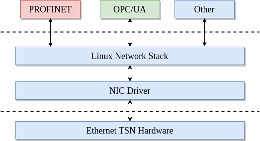

Introduction
The TSN Testbench is a real-time and non-real time traffic validation tool
for converged TSN networks. PROFINET as well as OPC/UA PubSub and other
configurable protocols are supported. Furthermore, the performance validation of
security algorithms can be utilized. The evaluation application is primarily
used to simulate a PLC. It generates RT and non-RT traffic, mirrors traffic and
performs consistency and latency checks. The Linux TSN Testbench is split
into two applications:
reference: Traffic generation and checking simulationmirror: Traffic mirror application for traffic generated byreferenceapplication
The concept is shown below.

The traffic generation and reception are based on standard Linux interfaces. RAW sockets and BPF filters are utilized. The interface is configured into promiscuous mode. Sending and receiving packets are implemented via system calls.
Furthermore, the applications have been extended to alternatively use AF_XDP
sockets in order to speed up the frame transmission and reception as well as to
improve deterministic behavior.
Both applications are configured via YAML files. Sample YAML files are provided
for both applications in the tests folder.
The tools are implemented in C and licensed under BSD-2-Clause. The coding style is the Linux kernel one.
Version history:
v1.0: February 2021, PROFINET RT simulation
v2.0: February 2022, PROFINET TSN simulation
v3.0: August 2022, Multi Middleware simulation
v4.0: July 2023, PROFINET Security
v5.0: September 2024, Grafana visualization
Motivation
Over the last years the Linux kernel and open source ecosystem in general introduced TSN functionalities. This includes the time synchronization with PTP via 802.1AS, various traffic shapers defined by IEEE and deterministic frame reception and transmission. Furthermore, the PREEMPT_RT patch turns Linux into a real-time Operating-System. How well do these mechanisms perform for real world use cases? For instance, is it possible to run PROFINET over TSN on top of Linux? Which jitter, cycle times, throughputs and latencies can be achieved?
To answer these questions, the Linux TSN Testbench has been developed. The
purpose of that tool is to evaluate manufacturer’s hardware as well as
underlying drivers and the Linux network stack itself. Thereby, please note that
is not a TSN conformance testing tool, it is intended for evaluation. The tool
itself is independent of any hardware manufacturers. All used TSN mechanisms are
utilizing mainline Linux only utilities for data and control plane.
While the development of the tool started for PROFINET RT and later TSN, it is
now able to generate any kind of cyclic Ethernet payload. This way, different
middlewares next to PROFINET such as OPC/UA can be simulated and tested.
The overall idea is shown below.
{kind=link}
Architecture
The application itself performs cyclic Ethernet communication. There are
different traffic classes ranging from real time Layer 2 up to UDP
communication. The cyclic receivers and transmitters utilize either traditional
AF_PACKET or modern AF_XDP sockets. For both socket types the receive
flow is configured via either BPF filters or eBPF XDP programs. Based on the
configuration, or profiles, the Linux TSN Testbench can simulate different
traffic types such as PROFINET or OPC/UA PubSub. The image below shows an
example of three different middlewares in combination with non-real time
applications utilizing XDP.